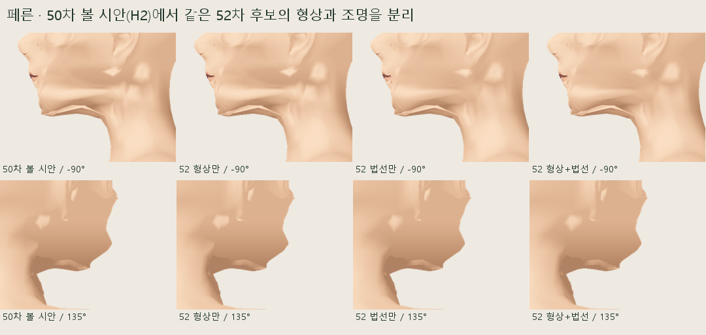
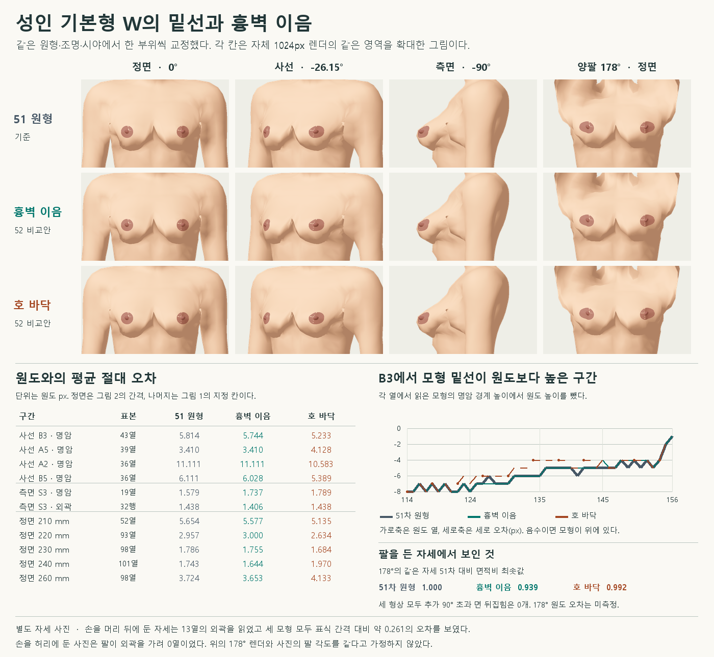
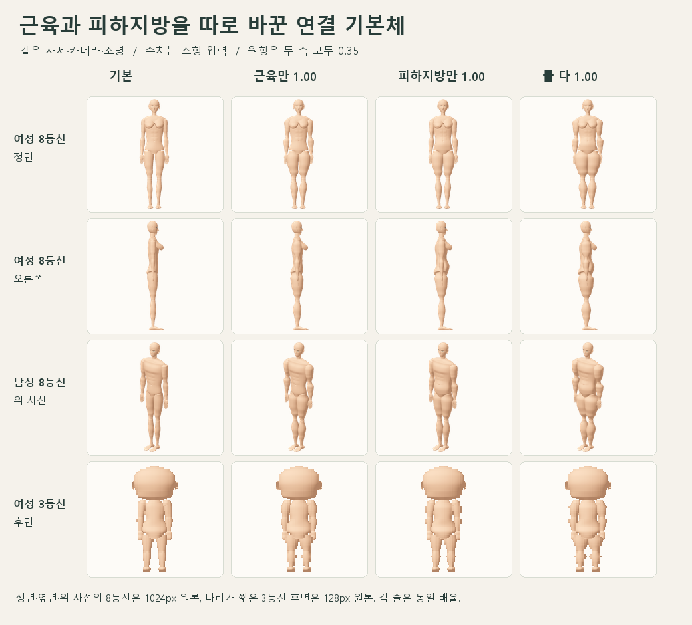
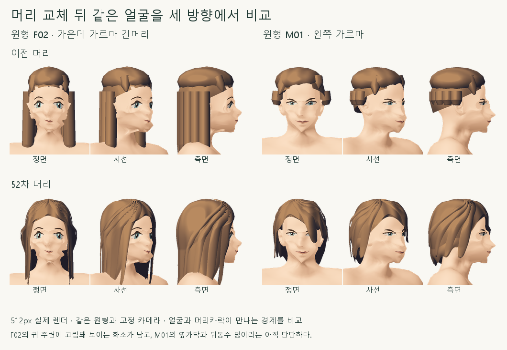

턱밑은 부드러워졌지만 정면 볼이 다시 꺾인 시안
H2에서 피부까지 옮기면 정면 오른볼 경계가 역행한 폭이 2→7px가 됐습니다. 법선만 고친 시안을 따로 남겼습니다. 같은 법선 수정을 51차 페른에 적용하면 측면 명암 차이가 12.57→13.36으로 커집니다. 힘멜과 51차 페른에 일괄 적용하는 안은 보류했습니다.
52차 · 페른·힘멜 · 성인 W · 남녀 2~8등신 기본체 14개
같은 얼굴에서 피부 좌표와 빛이 반사되는 면 방향을 따로 바꿨습니다. 두 줄이 가장 뚜렷한 50차 볼 보정 시안(H2)에서 피부 좌표를 유지하고 208점의 면 방향만 바꾸니 측면 밝기 차이가 27.58에서 17.15로 줄었습니다. 정면·양사선·위·아래를 포함한 열 방향에서 외곽은 같았습니다. 실제 원화와 겹칠 때 턱선 자체의 오차는 그대로입니다.

W의 흉벽 이음은 사선 B3의 하부 명암 오차를 5.814→5.744 원도 px로 줄였습니다. 측면에서는 공기와 맞닿는 외곽이 1.438→1.406px로 가까워졌지만 안쪽 명암선은 1.579→1.737px로 멀어졌습니다. 보존한 51차, 52차 안·바깥 접선, 하부 낮추기 세 가지를 부위 → 비교 원형에서 바꿔 보세요. 다른 88개 선택에는 51차까지 확보한 결과가 남아 있습니다.

모델 → 전신 14 → 외형 조합 → 체형에서 두 값을 독립적으로 바꿉니다. 여성 8등신에서 근육만 최대로 하면 위팔의 평균 반지름이 38.0%, 허리 두께가 6.7% 늘었습니다. 지방만 최대로 하면 각각 22.3%, 41.6% 늘었습니다. 14개 기본체를 14조건으로 검사하고 총 1,400장을 렌더했습니다. ‘외형 원형 복원’으로 기준 그림을 다시 열 수 있습니다.

모델 → 전신 14 → 외형 조합 → 얼굴 교체에서 기본 얼굴과 같은 성별의 연구 얼굴 4개를 고릅니다. 교체한 머리의 턱 아래와 몸의 목 둘레 사이에 새 면을 이어 붙였습니다. 2~4등신에서는 원래의 큰 두개와 낮은 눈높이를 유지하도록 보정했습니다. 이 조건에서 뺨과 귓밑 굴곡은 여전히 큽니다. 전신의 기본 얼굴에서는 얼굴형·눈·코·입·귀를 각각 20가지에서 고를 수 있습니다.
100개 머리 선택 중 7계열 45개에 정수리부터 끝까지 이어지는 면을 적용했습니다. 연구 얼굴에서는 머리 표면의 실제 관자놀이와 정수리로 방향을 잡습니다. 페른의 긴 가르마에서 귀 근처로 새어 나오던 작은 피부 영역을 줄였고, 힘멜 옆가르마의 이마 중앙에서 면이 뒤집혀 검게 보이는 부분도 고쳤습니다.

H2에서 피부까지 옮기면 정면 오른볼 경계가 역행한 폭이 2→7px가 됐습니다. 법선만 고친 시안을 따로 남겼습니다. 같은 법선 수정을 51차 페른에 적용하면 측면 명암 차이가 12.57→13.36으로 커집니다. 힘멜과 51차 페른에 일괄 적용하는 안은 보류했습니다.
W 하부 바닥만 더 내리면 B3 평균 오차는 5.233px까지 줄지만 A5는 3.410→4.128px로 늘어납니다. 별도 촬영의 허리손 자세는 팔이 가려 외곽을 읽을 수 없었습니다. 53차에서는 측면의 내부 명암과 밖으로 드러난 선을 만드는 피부점부터 분리해 확인합니다.
근육과 지방을 함께 올린 14개 체형에서 몸통 안으로 새로 들어간 팔 정점 수를 1,351개에서 25개로 줄였습니다. 중립 자세의 특정 구간을 잰 수치입니다. 옷을 입혀 움직일 때의 충돌, 2~4등신 교체 얼굴의 뺨, 뒤통수의 큰 머리 덩어리는 후속 검수 대상입니다.